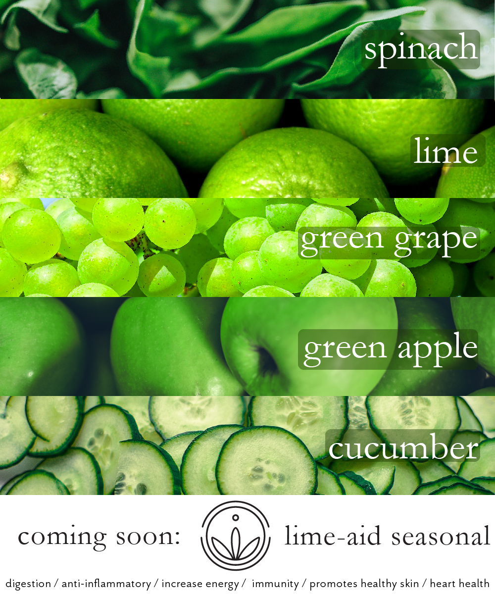
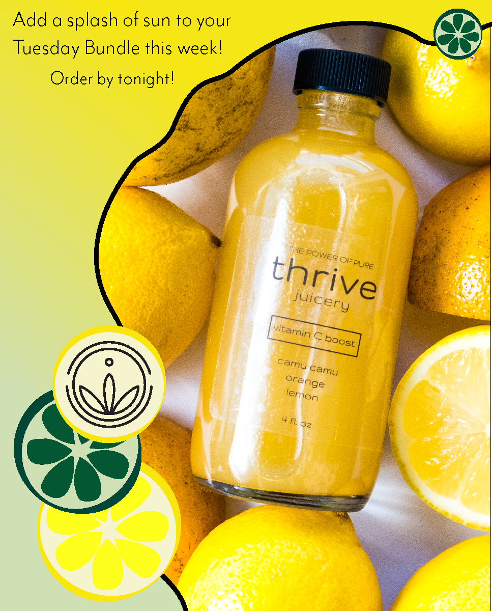

Past Work
This semester I got to take Graphic Design, and I've had so much fun with it so far. The following few entries are completed homework assignments that I am proud of after revising them. Both are 'UofM-related' designs, with the first being a series of advertisement banners for specific classes (a study of color and image) and the second being student sliders for the UM School of Information homepage (a study of layout, color, and image). Some of the other work I have done includes the "Studio Ghibli" alphabet poster on the Spotlight page, as well as creating logos, brand identity guidelines, and app layouts.


Additionally, I'm lucky to have been able to have some fun designing a few Instragram posts on behalf of my friend for an Ann Arbor company, thrive juicery. I designed for specific products and got to practice Adobe Illustrator skills while testing my creativity. Both ads were created using Adobe Illustrator, and were good practice for my design skils. Here you can see two ads I created, one for a green seasonal juice and one for a citrus juice.
 There will be much more to come!
Take me back to the top!